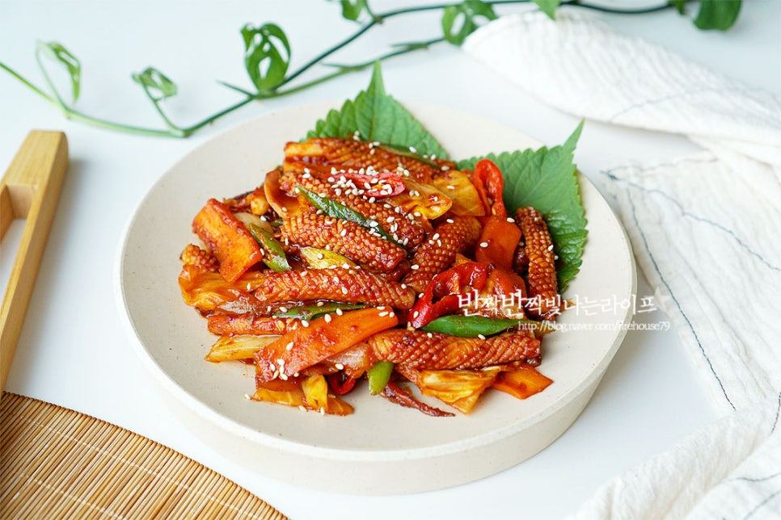

오징어 볶음

오징어볶음: 쫄깃한 식감과 매콤한 맛의 환상적인 조화
오징어볶음은 싱싱한 오징어를 매콤달콤한 양념에 볶아낸 한국인이 사랑하는
대표적인 볶음 요리입니다. 쫄깃한 오징어의 식감과 매콤한 양념의 조화가
환상적이며, 밥반찬으로도, 술안주로도 손색없는 메뉴입니다.
오징어볶음의 매력
쫄깃한 식감: 싱싱한 오징어의 쫄깃한 식감이 살아있어 씹는 즐거움을
더합니다.
매콤달콤한 맛: 고추장과 설탕을 기본으로 한 양념이 매콤달콤한 맛을 내어
입맛을 돋웁니다.
다양한 채소와의 조합: 양파, 대파, 당근 등 다양한 채소와 함께 볶아내면
더욱 풍성한 맛을 즐길 수 있습니다.
간편한 조리: 재료만 준비하면
누구나 쉽게 볶아 먹을 수 있는 편리한 음식입니다.
오징어볶음의 역사와 유래
오징어볶음은 한국인의 오랜 식문화 속에서 자연스럽게 발전해 온
음식입니다. 싱싱한 해산물인 오징어를 활용하여 매콤하게 볶아 먹는 방식은
오래전부터 전해져 내려왔으며, 현대에 들어와 더욱 다양한 재료와
조리법으로 발전했습니다.